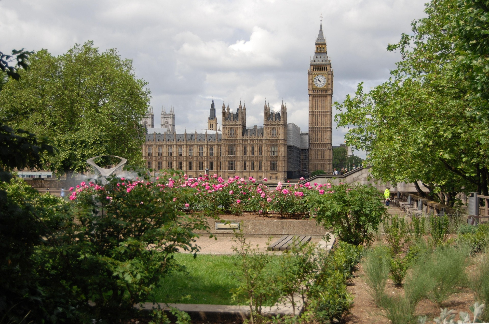
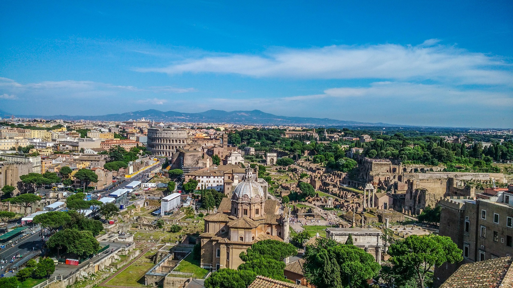

Europe
Europe is one of the most visited continents in the world. It is known for its rich history, famous landmarks, and cultural diversity. Tourists visit Europe for its architecture, food, and historic cities.
Top Cities to Visit:
Paris is known as the “City of Love” and attracts millions of visitors each year for its art, fashion, and iconic landmarks like the Eiffel Tower.
London is a global city famous for its history, royal heritage, and landmarks such as Big Ben and the London Eye. It is also a major cultural and business hub.
Rome is one of the oldest cities in the world and is filled with ancient architecture, including the Colosseum and Roman Forum, showing its rich history.
| City | Country | Main Attraction | Annual Visitors | Popular Season |
|---|---|---|---|---|
| Paris | France | Eiffel Tower | ~19 million | Summer |
| London | UK | Big Ben | ~20 million | Spring / Summer |
| Rome | Italy | Colosseum | ~10 million | Spring |
Tourism data source: Statista



Image Source: Pixabay